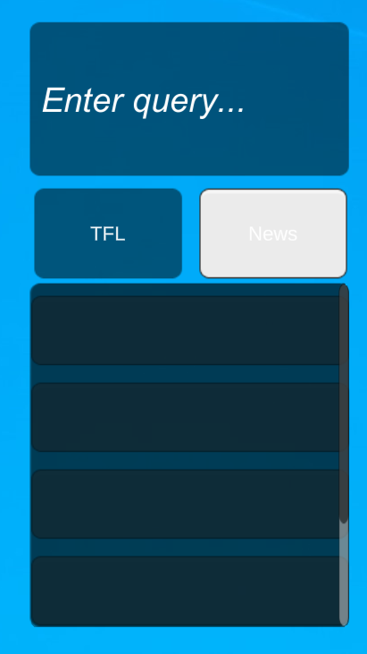
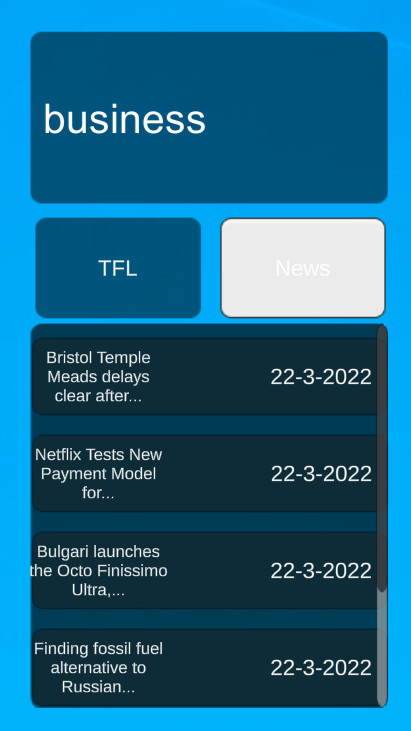
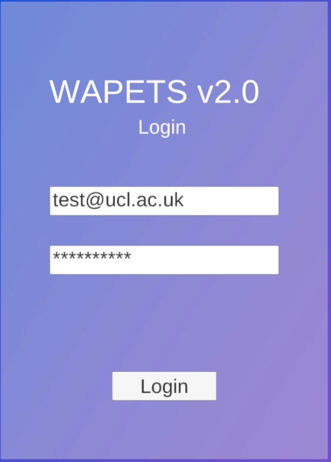
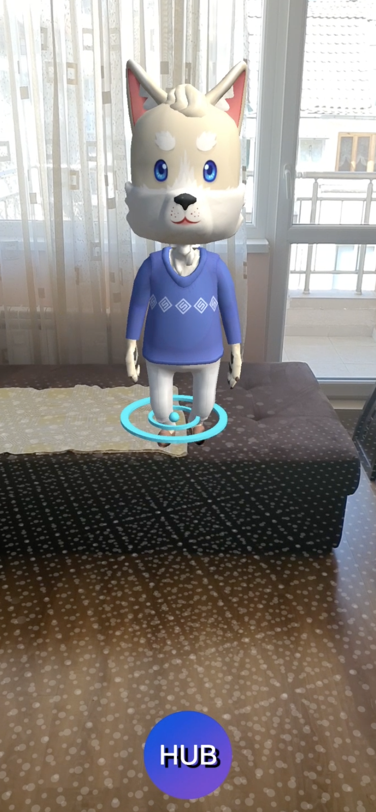
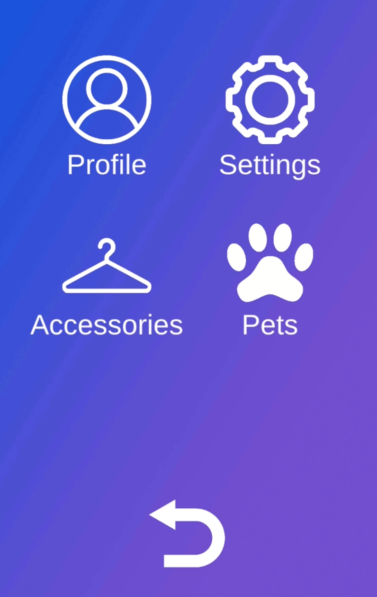

User Manual
Desktop Application
Using the API Search
To search for news articles, press on the "News" button to indicate that the search will be for a news article.
|  |  |
Then, in the input field, enter the keyword that you'd like to search for, such as "business". Hitting the enter key will then return the results of your search!
Likewise, to search for the arrival times of any TFL line, first press on the "TFL" button, enter the line number and hit enter to see the bus arrival times and which stop they'll be arriving at!
Login Screen
When you first load the app, you'll be greeted with a login screen. It is here that you can register and login with your registered account. In this video, we demonstrate what happens when you fail login, how to login and what happens once you login!
Desktop Widgets
Once you login to the app, you can start to interact with the GUI. In this video, we demonstrate how to interact with the pet, use the timer and the music player!
Voice Assistant
Once you login to the app, you can start using your voice to interact with the app. In this video, we show you how to use the voice assistant and chat with it. To edit the voice commands, simply open the csv file under the /resources/configs folder and add the command you'd like to include in the app!
Mobile Application
Login Screen
When you first load the app, you'll be greeted with a login screen. It is here that you can register and login with your registered account.

If you fail to login, you'll be greeted with a similar login failed message as the one on the desktop app. If you succeed in logging in, the app will open up with the pet waiting for you!
AR Mode Pet
Once you login to the app, you can start to interact with the Pet and the Menu.

You can interact with the pet by using your voice, click on the screen to have the pet move around in your house/wherever you are, or click on the hub menu to open the menu and user options!
Hub Menu
Once you login to the app, you'll be able to see a hub button on the bottom of your screen. You can click on it to open several settings and menus. By clicking on the "Pets" option, you can see your pets in a list and choose which one to interact with!
Deployment Manual
WAPETS 2 - Mobile Installation
Android
To install on android, simply copy the wapets2-mobile.apk file onto your android device and install from within your device's file manager.
Usage
Start the app after installing. When prompted, sign in with your WAPETS account and you are ready to go! Click around the viewport to make your pet move around and ask it some questions!
Deployment
Deployment is straightforward.
1. Make sure that the project correctly targets Android/iOS -> Open the project folder in Unity Editor, go to File->Build Settings->Android/iOS and select switch platform if your platform is not set as the target platform already.
If you are running deployment straight to your mobile device:
- If on android, enable USB Debugging mode and connect your device via USB
- Select your device from the "Run Device" from the Drop-Down menu
- Click on Build And Run. Unity will ask you to save the .apk package locally for later transfer to your device
If you are deploying locally, select Build and save your .apk to the package source of your Emulator
WAPETS 2 - Desktop Installation
Install
Download the folder install rasa. If you are a developer, install Python and/or Unity as well.
Usage
Modify VoiceControl.csv file under Assets/Resources/Configs folder if you want to add/delete voice commands. For this prototype we only include "open/close" keywords.
Change the files under the Assets/Resources/Music folder if you want to add/delete songs.
Deployment
Deployment is straightforward.
Issue $ rasa run to run chatbot server. We will be using default hook for this tutorial. In case you want to create your own custom connector please refer to this page to see how a custom connector can be built in Rasa. Test out your installation by running the Rasa server and opening http://localhost:5005 in any browser. You should get a reply “Hello from Rasa 1.7.0” with the last part being the version of Rasa installed.
Double click on the WAPETS2.exe file under the Build folder.
As a developer, you can define the voice commands you want to listen for and implement the event handlers for each command in Unity. Make sure that:
- You set up an IBM Cloud account, add the Speech to Text and Text to Speech service to your account.
- In Unity's Edit>Project Settings>Player, go to the other settings tab, and find configuration. In here, set API Compatibility Level to ".NET 4.x".
- For UI settings, follow the settings in this video (timestamp: 7:05).
Weekly Development Blog
Our weekly development blog, documenting (semi-formally) our progress throughout the development process can be found in this link.
Legal Issues & Processes
IP Statement
The intellectual property rights (including patent, copyright, database, registered or unregistered design rights or trade marks) of this project fall under the UCL Studentship IP and is owned by UCL and, to the extent that any of the Studentship IP is not automatically owned by UCL, the developers and users assign their rights in the Studentship IP to UCL, with full title guarantee and free of encumbrances as a present assignment of existing and future rights. The developers and users also agree to execute such documents and provide such assistance as UCL may reasonably request at a later date for these purposes.
Our project is owned and will be operated by UCL and IBM, and thus any source code distribution of the project can only be distributed in accordance with UCL and IBM, and hence is not available for use as open-source software unless specified explicitly by UCL and/or IBM.
GDPR Statement and Data Usage
Our project makes use of a login system that stores and processes user email addresses, which may include usernames and/or surnames and/or other user information, and user passwords. Our application will not keep or expose any data (usernames, emails, passwords, user searches and user preferences) that have been sent, stored and/or uploaded by users after the users finish using it. The application is expected to be accessed and used by any legal citizens, without discrimination towards any of the users that may want to use it based on gender, race, religion etc.
We’ve taken the necessary steps to ensure privacy and data protection in our project. We’ve set our GitHub repository to private to disallow any confidential information, whether it be user information, token information or source code to be leaked. This also ensures that the data is not shared to anyone that is not directly involved in the development of our project.
To ensure user’s data safety, we can ensure users that we use appropriate methods to process the data that may be sent by users. No data is sent or sold to any other company, organisation (profit or non-profit) other than those covered under the IP statement. The web server used to store user information uses Python’s Django framework to send and receive information from and to the web server, ensuring that our data is processed as it is intended to.
Our project uses speech processing through IBM’s Watson toolchain to process certain user commands. None of the user voice commands are stored, sent or processed in any way. We can ensure users that their biometric information is not stored in any way and is used in accordance with the GDPR to only process commands that the user instructs the application to perform.
Finally, we ensure that our program only processes data that is necessary for the minimum functionality of our project, namely the login screen. Other user data such as keystrokes, search inputs, mouse clicks and any other type of user input and/or user-specific information is not processed in any way by our application. End users can be ensured that their data will only be processed in the abovementioned methods, and any changes that may occur will be informed to them and will be asked for their confirmation.
Licences and Intellectual Property
For the dependencies used for the project, which are:
asgiref - BSD License, Django - BSD License, gunicorn - MIT License, psycopg2 - GPL License, pytz - MIT License, sqlparse - BSD License, whitenoise - MIT License, dj-database-url - BSD License, djangorestframework - BSD License, drf-jwt - MIT License, pyyaml - MIT License, uritemplate - BSD License, drf-yasg - BSD License, Poco – Apache License 2.0, Rasa - Apache License 2.0
and etc., all of them allows for commercial use, modification with changes stated and private use.
For the application development, we used Unity Technologies’ Unity for the application and IBM’s Watson for additional functions and libraries.
No copyrighted resources such as images are used other than those stated above and/or referenced in any part of our website on the project.